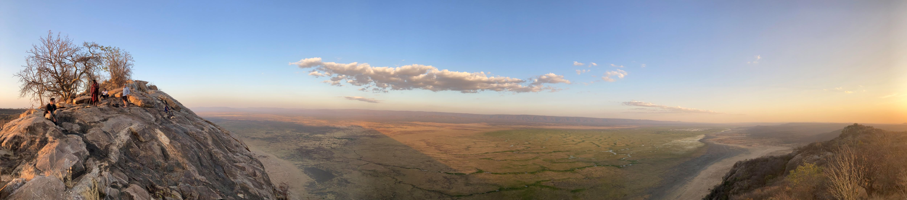
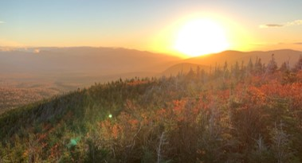
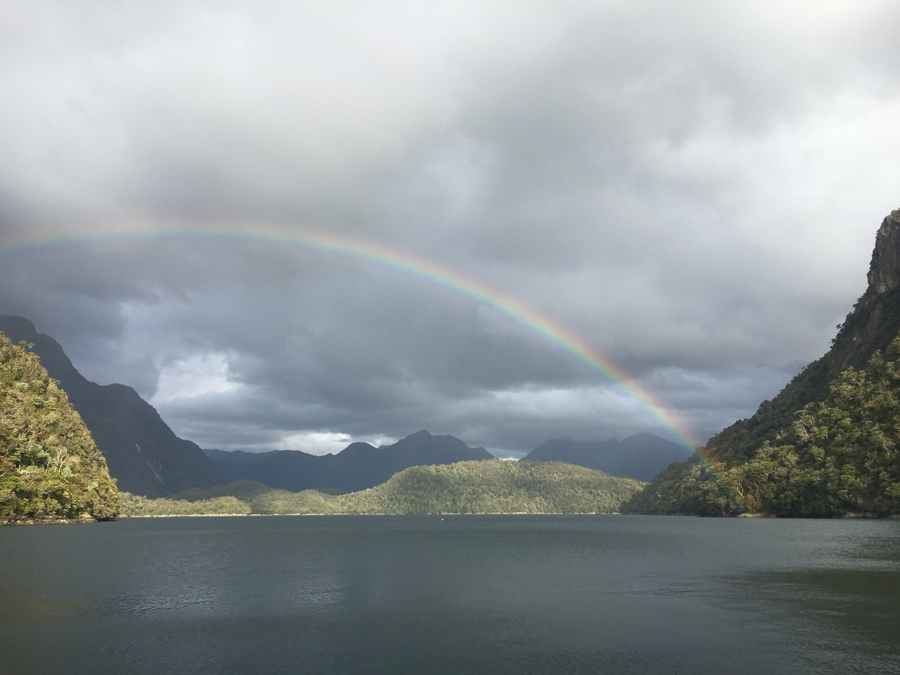

Observations, questions, and reflections from fieldwork — Tanzania, New England, Chile, South Africa, & California.

Sitting with questions from my scoping review on Maasai land tenure — and what Western ecological science keeps missing when it enters landscapes already held in relationship.

On spending two winters setting camera traps across managed and unmanaged forest in Vermont and New Hampshire — and what the data does and doesn't say about mammal occupancy.

Fieldwork in Chilean Patagonia — remote, wet, and extraordinary. First encounter with Darwin's frogs.
More field notes and reflections soon.